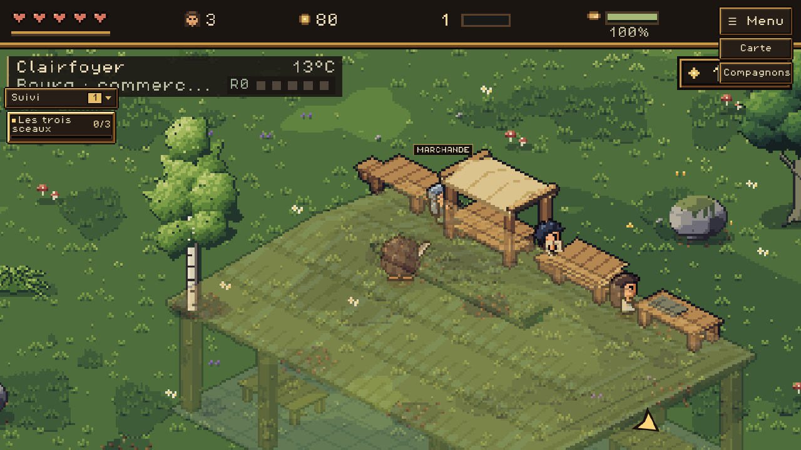
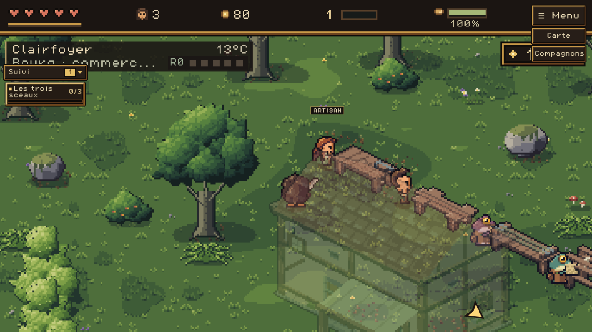
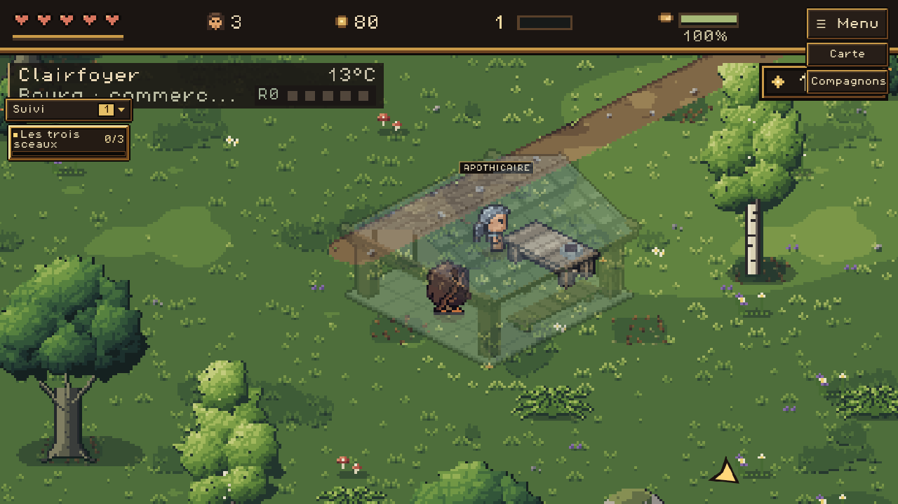
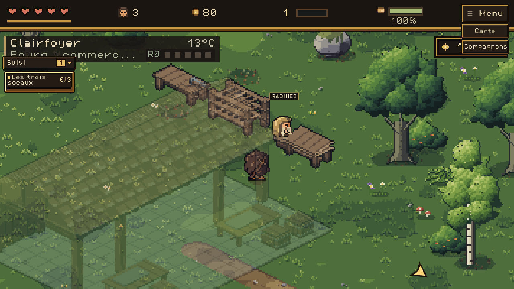

Dix-huit habitants représentatifs de l’effectif existant, onze quartiers, postes exclusifs et logements distincts. Les activités attendent leurs ressources ; les trajets suivent les accès et les rues de la ville. Personnages en quatre directions natives.




La maison entière s’atténue lorsqu’elle masque le joueur ; ses fondations restent solides. Captures du navigateur sur le build embarqué, au format ordinateur et mobile : Halles mobile, Métiers mobile, Conseil mobile, résine mobile. Rapport avec Web Worker · Rapport sans Web Worker · Fonctionnement et limites.